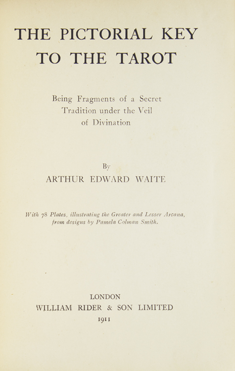

The Pictorial Key to the Tarot
The companion to your RWS deck: Waite’s explanations of its symbols, his card meanings, and the layout now called the Celtic Cross. It records why he changed some traditional images, while preserving older fortune-telling meanings alongside Smith’s new scenes. This helps explain why a card’s printed meaning sometimes differs from what its picture suggests.
More about this book
Written to accompany the Rider–Waite–Smith deck, the book explains Waite’s deliberate changes to older trump images. His divinatory sections also preserve inherited meanings, which can sit awkwardly beside Smith’s new scenes. The printed list and the picture therefore remain two pieces of evidence.
Part III gives the ten-card method later known as the Celtic Cross, under Waite’s claim of an ancient Celtic method. The title does not establish that ancestry. The illustrated book followed the earlier, unillustrated Key to the Tarot. It was released in 1910 with a 1911 title-page date. Waite wrote the explanations; Smith created the card images.
Read the card descriptions ↗Meanings & spreads ↗Why 1910 and 1911 both appear ↗Lesson 11